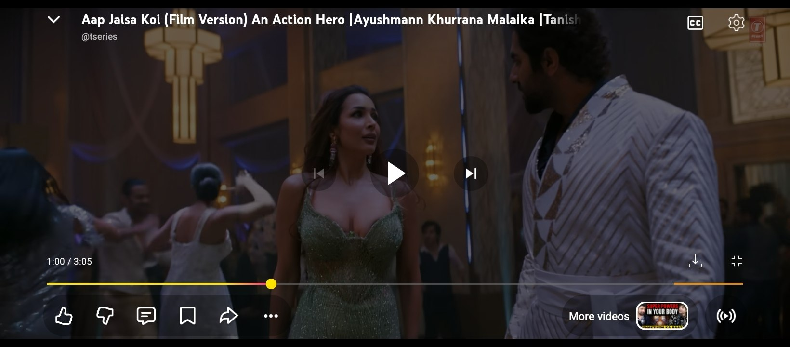
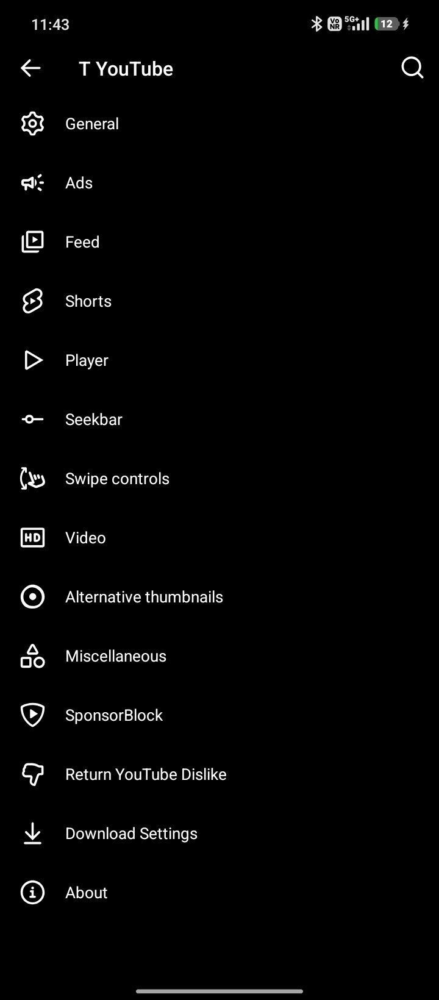
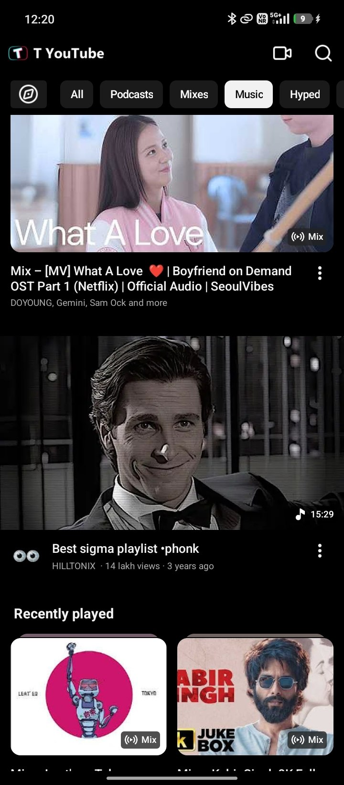
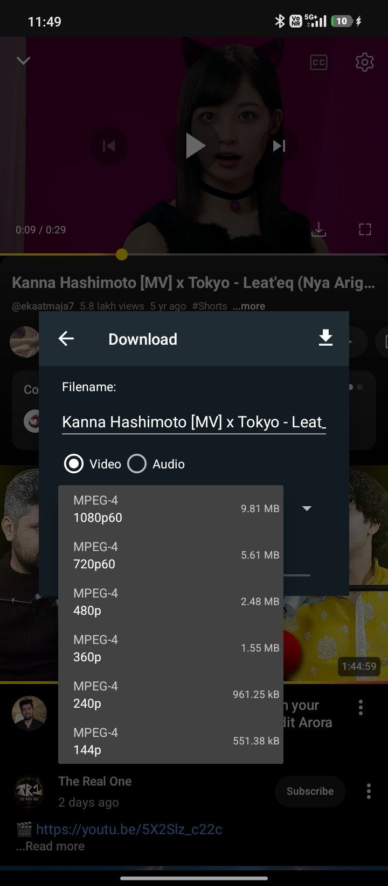
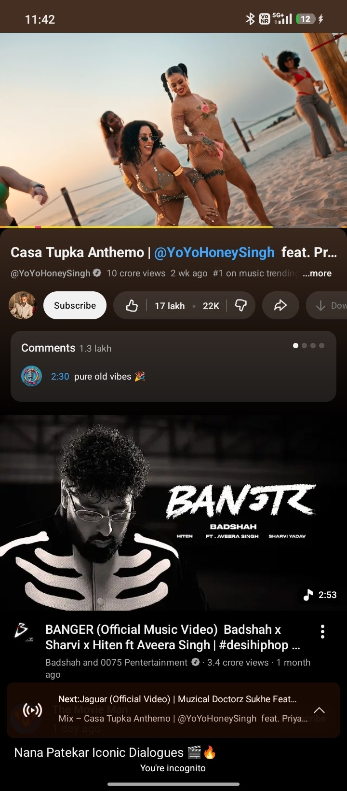

Most people get stuck on one thing only: this app needs microG-RE instead of Google Play Services, and it must be installed first. This page shows the whole thing — a screen recording, every step, and what each screen should look like.
The whole install, start to finish. If the video is still processing, the written steps below are complete on their own.
▸ Tap play — the recording is 153 MB, so it may take a moment to buffer.
Follow in order. Skipping step 1 or 2 is the #1 reason nothing works.
Tap the first button below. It lands the official MicroG RE APK straight into your downloads — 107 MB, works on every phone.
Open the downloaded microg-7.2.1.apk and tap Install. Android will ask you to allow "Install unknown apps" for your browser or file manager — tap Allow and come back. This prompt only appears once.
Open microG-RE → Settings → Signature spoofing → switch on T YouTube. Then go back.
Tap the second button, open T-YouTube-v1.0.0.apk, tap Install. Allow the unknown-app prompt if it appears.
Launch T YouTube from your app drawer. Sign in, and it plays.
Real captures from the v1.0.0 build. Use them to confirm you did each step right.





Both buttons go straight to the file — one tap, no extra page.
The Google Play Services replacement T YouTube runs on. Nothing works without it, and it must be in place before the app.
107 MB · universal · Apache-2.0 Download microG-REThe app itself. Installs straight over YouTube Pro v59 without touching your logins or watch history.
214 MB · Android 10+ · universal Download T YouTubeChecksum for the APK · 3DD2E57BCF683B36A9A1DF8BE31AA69A2380D16E96DCA9DE5009B49221B2F005
These cover almost every failure. Try them in order.